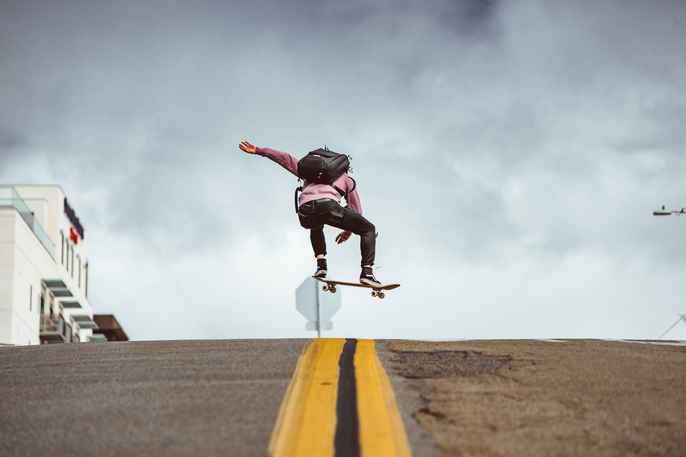

Скейтбординг - это экстремальный вид спорта, зародившийся в Америке в середине прошлого века. В его развитии были и взлёты, и падения, но тем не менее он доказал свою жизнеспособность, просуществовав более 70 лет, в итоге выйдя к 2020 году в список олимпийских видов спорта и одной из значимых субкультур современности. Всё начиналось с американских сёрферов-энтузиастов, которым хотелось кататься, даже когда в океане не было волн.
Так в 1950-х годах появились первые скейтборды – по сути – небольшие доски с прикрученными к ним колёсиками (где-то от роликовых коньков, а где-то и вовсе от того, что попадётся под руку).
В 60-е появляется фабричное производство, но скейты ещё далеки от своего нынешнего облика. За это время наблюдалось уже два спада в интересе аудитории к этому занятию, и очень закономерно, что им на смену пришли и два события, приведшие к всеобщему расцвету индустрии. В начале 70-х одна из компаний взамен колёс пластиковых, гремящих и плохо управляемых на скорости, явила свету колёса полиуретановые – мягкие, цепкие, износостойкие – они позволили приблизить ощущение от катания на скейте к катанию на сёрфе. А в 1976 Аланом Гелфандом (Alan Gelfand) в рампе был открыт прыжок на скейте – первое Олли, которое впоследствии Родни Маллен (Rodney Mullen) перенёс из рампы на плоскую поверхность, что по своей сути положило начало огромному многообразию трюков на доске, о котором мы сейчас и поговорим. Для понимания трюков сперва предстоит узнать названия и роль основных деталей трюкового скейтборда.
 ГЛАВНАЯ
BMX
СКЕЙТБОРД
САМОКАТ
ГЛАВНАЯ
BMX
СКЕЙТБОРД
САМОКАТ